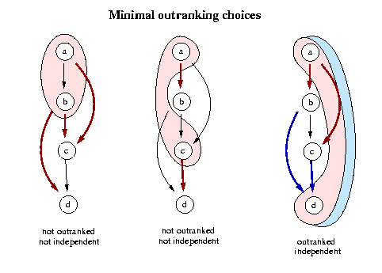
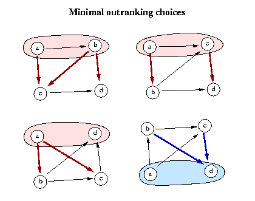

Didactical digraph
Best unique choice problematics, the stability principle in question
We consider the outranking graph G(A,S), where A = { a,b,c,d } is a set of four decision actions supporting the outranking relation S = { a S b, a S c, b S c, b S d, c S d }.

The outranking graph G(A,S) supports three minimal outranking choices: {a,b}, {a, c}, and {a,d}. The first and second choice are not independent and not outranked, whereas the last one is a null kernel, i.e. an independent and conjointly outranking and outranked choice. Following our RUBY methodology, the graph in question does not support any reasonnable best choice recommendation. Indeed, the lack of transitivity of the outranking relation between a and d suggests that three circular geometrical dispositions of the given outranking graph are equally plausible (see figure below). The first suggests that a and b might be considered equivalent, the second that a and c might also be considered equivalent and the last suggests that a and d might again be considered equivalent. So all four actions appear potentially to be equivalent and the given outranking graph does in fact not support any convincing best choice recommendation.

However, among the three minimal outranking choices, {a,b} shows the strongest outranking irredundancy with two non empty private outranked open neighbourhoods: {c} for a, and {c,d} for b. The choice {a,c} also supports two non empty private outranked open neighbourhoods: {b} for a and {d} for c, but of smaller cardinality. Whereas the kernel {a,d} shows the weakest outranking irredundancy with a single non empty private outranked open neighbourhood: {b,c} for a.
If the instability of the best choice recommendation is not considered a problem then the choice {a,b} shows the most convincing strict outranking quality and could be considered in priority for recommendation as unique best choice candidates as suggested below by Denis Bouyssou:
« ... le noyau classique renvoie {a, d}. le choix de d ne me semble pas convaincant car il y a dans le graphe un sommet qui à tous égards est meilleur que d : le somment b. L'argument faisant valoir que la levée de l'incomparabilité entre a et d pourrait jouer en faveur de d est intéressant mais je ne comprends pas pourquoi, a priori, on privilégierai une telle hypothèse. Une autre hypothèse pourrait être que en fait b S a. Dans ce cas il me semble clair que le choix devrait se reduire à b. A moins d'avoir d'autres informations à disposition (un tableau de performances ou la méthode utilisée pour bâtir S), je ne comprends pas pourquoi la première hypothèse est priviligiée. Par exemple si d est une action "bizarre", l'action b pourrait être à mi-chemin entre a et d et le fait que b S d laisse croire qu'aller plus loin dans cette direction n'est pas souhaitable (À ce propos, il me semblerait intéressant d'étudier des mécanismes qui sont cohérents avec la sémantique de la relation de surclassement. Un arc absent ne signifie pas qu'il n'existe pas mais que l'on n'a pas pu l'établir avec probance). En tout état de cause, il faut être très clair sur l'information dont on dispose pour juger d'une procédure de choix. Si la seule information est la relation S (sans autre précision sur sa nature), je persiste à croire que b devrait être dans le choix. » D. Bouyssou, private communication, 14 octobre 2005.
Quid of the stability principle ?